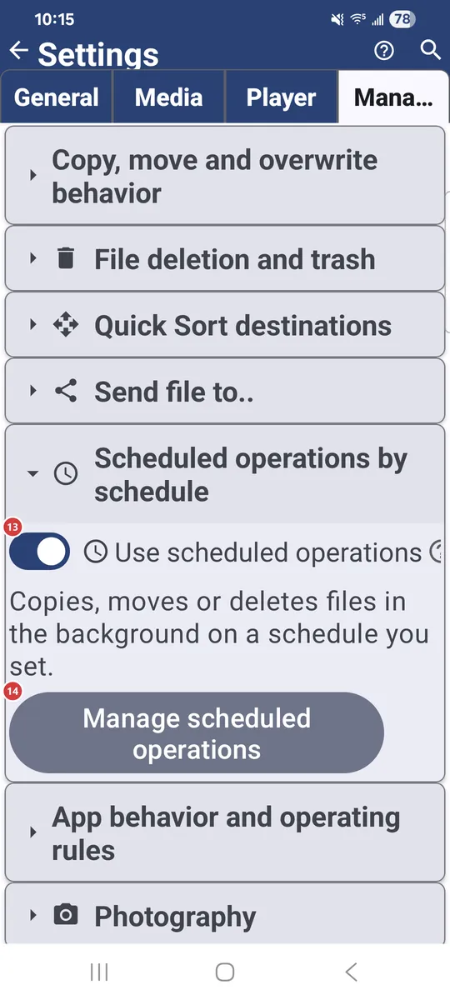
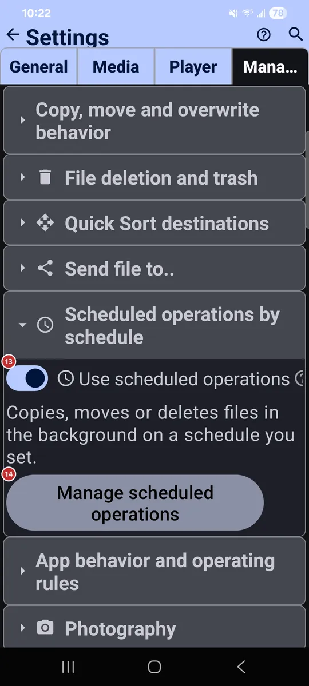

Settings: Management
What this is for
Management is where you set how files are copied, moved and deleted, which resources are Quick Sort destinations, what the app records and runs in the background, and which extra programs and gestures are on.


In this order
There is no fixed order here - every option works on its own. They are grouped below by the same section headers you see on the tab. Some groups, such as Wear Companion or Scheduled operations, show up only where the device or edition supports them.
The elements
Copy, move and overwrite behavior
1Allow copyingAllows copying files into your destination folders.
Pair it with the Quick Sort destinations below to copy the current file in one tap.
2Overwrite existing file when copyingReplaces a file with the same name when copying.
It applies when the destination already holds a file with the same name.
- Undo
- An overwritten file is replaced by the new one, so leave this off unless you are sure.
3Go to next file after copyingMoves on to the next file after a successful copy.
It speeds up sorting a batch of files, because you do not have to navigate by hand.
4Allow movingAllows moving files into your destination folders.
Pair it with the Quick Sort destinations below to move the current file in one tap.
5Overwrite existing file when movingReplaces a file with the same name when moving.
It applies when the destination already holds a file with the same name.
- Undo
- An overwritten file is replaced by the new one, so leave this off unless you are sure.
File deletion and trash
6Enable Safe ModeAsks for confirmation before delete and move.
When it is on, the app asks before deleting or moving files, to prevent accidental data loss. The two options below switch the questions separately.
7Confirm before deleteAsks before files are deleted.
The Player tab has its own switch for deleting inside the player.
8Confirm before moveAsks before files are moved.
Moving changes where a file lives, so the question gives you a chance to stop.
9Use trash folder (.trash)Moves deleted files to a hidden .trash folder instead of deleting them for good.
On local resources you can bring a file back with Undo before the resource is closed. Network and cloud files are always deleted permanently. On Android 12 and newer, some shared folders need the Media management permission; without it, deletion may be permanent. With the option off, files are deleted at once and the space is freed immediately.
- Undo
- The trash is a safety net, not an archive: emptying it with the Delete all in trash button removes those files for good.
Quick Sort destinations
10Max destinations (1-30)Limits how many Quick Sort destinations you can have.
From 1 to 30. Each destination gets a number and a color for easy identification.
11+ AddMarks another resource as a Quick Sort destination.
The button shows up once you have resources that are not destinations yet. Add resources in the resource list first, then mark them here.
12Quick Sort destinationsYour Quick Sort destinations, in the order of their numbers.
Each row shows the destination's number and color, its name and its path. Use the arrows to reorder and the delete button to remove it from the list.
- Undo
- Removing a destination only unmarks the resource. The resource and its files stay where they are.
Scheduled operations by schedule
13Use scheduled operationsTurns scheduled runs on or off.
When it is off, nothing runs on schedule, but your operations stay saved. Switch it on and they carry on.
14Manage scheduled operationsOpens the window where you create and manage scheduled operations.
A scheduled operation copies, moves or deletes files in the background on a schedule you set.
App behavior and operating rules
15Show detailed errorsShows the full error details instead of simplified messages.
Useful when you are chasing a problem or reporting one.
16Resume playback on next launchReopens the last played file when the app starts.
It continues from where you left off.
17Remember file lists (default for new resources)Saves the file list of new resources so they open faster.
After a scan the list is stored in the app database, and next time it loads at once. Use Refresh to pick up changes made outside the app. This is only the default for new resources.
Photography
18Enable photo captureShows the camera command in the file browser.
New photos are saved to the resource you are browsing. Nearby options let you ask for a file name, open the photo for editing, copy it to the clipboard, tag it with the location and choose another destination.
Video recording
19Enable video recordingShows a command to record video straight into the current resource.
A second option opens the finished video in the player, and you can choose another destination folder.
Voice recorder
20Enable microphone recordingShows a microphone button in the file browser.
Audio is recorded to a resource you pick or to the Downloads folder. You can also have the app ask for a file name each time.
Screen recording
21Screen video recordingRecords the whole screen to a video file, with sound from the microphone.
A stop control and a timer appear while recording. You can choose where the video is saved.
Wear Companion
22Wear CompanionShows the watch companion in the programs panel and menu.
Turn it on if you have a Wear OS watch. The companion opens from there and decides what this phone shares with the watch.
Additional programs and scenarios
23Camera OCR translationTurns on the quick photo, text recognition and translation flow.
Take a photo and the app recognizes and translates its text. A second option skips the translation and shows the recognized text as it is.
24CalculatorAdds the Calculator program.
It shows up in the programs menu, the quick-access panel and on the launcher desktop.
25StopwatchAdds the Stopwatch program.
It shows up in the programs menu, the quick-access panel and on the launcher desktop. Its own settings are one row below.
26Network MonitorAdds a diagnostic program for the network.
It shows the connection, the signal and the network details.
27System informationShows system information in the programs panel and menu.
Turn it on to reach it without opening Settings.
Operating system interaction
28Prevent sleepKeeps the screen on while you use the app.
While you view media files, the device does not sleep or dim during playback or viewing.
29Auto-download incoming linksDownloads a file from a link shared to the app.
When you share an http(s) link to FastMediaSorter, the linked file is fetched into the resource you choose. Another option opens it in the built-in player right after a successful download; otherwise you get a short message.
30Add widget to the Android home screen..Lets you place an app widget on the Android home screen.
Choose a widget and put it on your home screen.
31Set as defaultOpens the dialog for making FastMediaSorter a default app.
It has a button for each file type - images, audio, video and documents - plus two switches: show the app in Open with and handle media buttons, and accept files shared from other apps. Everything applies at once.
Edge screen gestures
32Gesture overlayShows thin gesture strips at the screen edges, over other apps.
Up to four strips, two on each side. A swipe from a strip runs the action assigned to it, such as a screenshot, the camera, the flashlight, volume or brightness, or opening an app. It needs the Display over other apps permission.
33Configure gesturesOpens the setup for edge gestures.
Choose which zones are on, whether their guides are visible, and the action for each swipe direction: up, down or inward.
Controls & Keybindings
34Controls & KeybindingsOpens key and button remapping for media controls.
Any command can be reassigned to a D-pad button, a gamepad button, a keyboard key or a mouse button.
Reset
35Reset Management settingsReturns only this tab to its defaults.
Settings on the other tabs keep their values. The app asks you to confirm first.